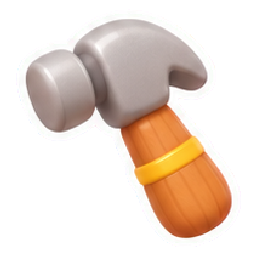
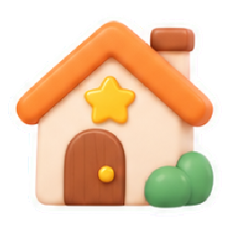

歡迎來到喵居
喵居是一款零壓力的貓咪生活遊戲。兩隻腳走路的貓像人一樣過日子：上班、做飯、種菜、交朋友、談戀愛、成家。房子從一間小屋開始，慢慢蓋成兩層樓的家，還有農場和整條街的鄰居。
- 每件事都是想做才做
- 沒有期限、沒有限時任務、沒有倒數。錯過的節日每年同一天都會回來。
- 不會失敗
- 需求低了貓咪只會說聲「好睏…」，不會生病，也不會離家出走。好感、技能、舒適度星星都只會往上，家具賣掉全額退款。
- 時間跟現實一樣
- 日期、星期、幾點都照真實時間，季節照台灣的月份（3–5 月春、6–8 月夏、9–11 月秋、12–2 月冬）。關掉遊戲時間也會走，回來時「你不在的時候」會告訴你發生了什麼；這段時間貓咪會自己照顧自己，需求最低只會到一半。
- 只有一種錢：貓幣
- 上班、訪客的謝禮、信件和成就都能賺貓幣，用來買家具、衣服、食材和蓋房子。
- 開始新的生活
- 可以選單身、情侶或家庭，幫每隻貓取名，選花色（16 種）、眼睛顏色（15 種）和體型（標準、圓滾滾、修長、短腿、嬌小）。
- 存檔
- 遊戲會自動存在這台裝置上。登入 Google 帳戶的話，也會存到雲端，換裝置登入就能接著玩。
貓咪的一天
每隻貓都有精力、飽足、清潔、心情四種需求。需求低了，貓咪會自己去找合適的家具：睏了去睡床、餓了開冰箱、髒了去洗澡。
- 指派動作
- 點家具選要做什麼，點地面走過去，一次最多排 5 件事。設定裡可以關掉「貓咪自主行為」，全部由你指派。
- 摸摸
- 再點一下已經選好的貓，或按卡片上的「摸摸」。貓會呼嚕、冒愛心，心情變好；睡著的貓不會被吵醒。
- 好心情
- 34 種好心情，例如「睡飽飽」「好好吃」「滿天星斗」，只有加成，沒有壞心情。
- 技能
- 9 種技能：料理、園藝、音樂、知識、體能、魅力、藝術、釣魚、手作。用家具練習，從 Lv.1 到 Lv.10；料理每升一級，會自己想出一道新菜。
- 個性
- 10 種個性：貪睡、愛乾淨、貪吃、工作狂、宅貓、社交達人、藝術家、好奇寶寶、活力滿滿、綠手指。每隻貓有兩種，會影響牠喜歡做的事。
- 心願與人生志向
- 45 種小心願、11 種長期志向，完成會得到幸福點數，可以在「社交」的幸福商店換特別的個性和家具。
- 晚上睡覺
- 晚上貓咪會自己上床睡覺。遊戲關著的時候，晚上 10 點以後在家的貓咪會上床睡到早上 7 點；回來時如果還是深夜，牠們會走去床上睡，你照樣可以叫牠們吃宵夜或做別的事。
- 日記
- 每隻貓每天自己寫一篇日記：天氣、去了哪裡、釣到什麼、煮了什麼、和誰變成朋友。
時間、天氣與節日
遊戲裡的一天就是現實的一天，晨昏和季節都跟著真實的時間走。
- 黎明與黃昏
- 早上 5–7 點是暖黃色的黎明，傍晚 5–7 點是暖黃色的黃昏，晚上 7 點以後天黑，路燈和窗戶會亮起來。
- 天氣
- 雨是一陣一陣下的：雨天會有兩三段、每段兩到四小時的雨，多雲天偶爾下一陣小雨。冬天（12–2 月）下的是雪。下雨會幫菜圃澆水，天氣只帶來好處。
- 節日
- 照台灣的節日過：除夕、春節、元宵節、端午節、七夕、中秋節、新年祭、櫻花祭、夏日煙火大會、國慶日、南瓜夜、聖誕夜、聖誕節、跨年夜。除夕、春節、元宵、端午、七夕、中秋照農曆，每年的國曆日期不一樣，其他的每年同一天。當天到廣場逛祭典，每年第一次去會拿到紀念品，例如春聯、唐裝、貓咪花燈、香包、龍舟模型、柚子帽、烤肉架、聖誕裝和聖誕樹。
- 行事曆
- 時鐘旁的月曆就是現實的月曆，節日、家人生日、社團聚會都標在上面。每一天都可以寫 50 字以內的備忘錄。
- 《喵喵日報》
- 每天早上 6 點送到信箱：頭條、天氣（大概幾點會下雨）、哪個工作加薪、哪件家具特價、運勢、一題猜謎（答對有貓幣），還有三篇每天輪替的專欄（15 種主題）。
- 報紙架
- 信箱最多放 7 份沒看的報紙，多的會自動放上報紙架。收過的每一份報紙都在報紙架上，可以按月份翻回去看。
工作賺貓幣
派貓咪去上班，下班帶貓幣回家。工作是現實時間的 1 到 6 小時，一共 25 種；不會被開除，同一份工作越做職等越高。
- 零工（1–2 小時）
- 不需要家具，每天開放的不一樣，送報貓每天都有：送報貓（2 小時）、發傳單（1 小時）、打掃廣場（1 小時）、幫花店澆花（1 小時）、冰淇淋店打工（2 小時）、電影院收票（2 小時）、郵局分信（2 小時）、雜貨店上架（2 小時）、送便當（1 小時）、圖書館整理書（2 小時）、麵包店顧櫃台（2 小時）。
- 兼職（3–4 小時）
- 咖啡店店員（3 小時）、魚市場搬運（3 小時）、圖書館管理員（4 小時，家裡要有書櫃）、麵包師傅（4 小時，家裡要有爐台）、郵差（4 小時）、花藝師（4 小時，家裡要有插花）。
- 正職（5–6 小時）
- 薪水比較高：設計師（6 小時，家裡要有電腦桌）、醫院護理喵（6 小時，家裡要有浴缸）、鎮公所職員（5 小時，家裡要有月曆）、報社記者（5 小時，家裡要有電腦桌）、甜點師（5 小時，家裡要有烤箱）、電影院放映師（5 小時，家裡要有復古電視）、漁船船員（6 小時，家裡要有小池塘）、喵喵醫生（6 小時，家裡要有梯子書架）。
- 工作性質
- 體力活、服務業、文書工作、手藝活、照顧人，累的方式不一樣，也會練到一項技能。報紙每天會有一種工作加薪 20%。
- 預約上班
- 可以現在出發，也可以預約時間（整點，早上 6 點到晚上 9 點）。時間到貓咪會自己出門，遊戲關著也會去，薪水會出現在「你不在的時候」。
- 不能過勞
- 精力、飽足、清潔或心情太低，或這份工作做完精力會見底，就不能出門。會跳出提醒，並有「去休息、去吃東西、去洗澡、去玩一下」的按鈕。精力和飽足都在 95 以上，什麼工作都能去。
- 上班時的小插曲
- 上班時偶爾會跳出小插曲，每個選項都是好結果。累的時候薪水效率會降低（最低 70%），不會有其他懲罰。

蓋房子、擺家具按右下「建造」進入建造模式，這時遊戲時間會先停住，第一個分頁是「房屋」。一共 146 件家具，大多有 2 到 3 種配色。
- 擺家具
- 選一件家具後，下方的建造視窗會收起來，家具直接出現在家裡畫面中間的空位。按住家具拖曳就能移動，點別的地方家具會移過去；點家具或按綠色勾勾放下，上方也有旋轉和取消，按取消就回到建造視窗。
- 調整擺好的家具
- 點已經擺好的家具，可以移動、旋轉、換顏色、升級、收進收納箱，或賣出（全額退款）。
- 蓋房間
- 在「房屋」分頁選「蓋房間」，拖曳畫出範圍，牆和門會自動長好。貼著舊房間畫可以直接把房間變大，也能在自己的土地上蓋一間獨立小屋。院子裡的樹、灌木、石頭和石板路擋在範圍裡也沒關係，會自動收進收納箱（果樹熟了的果子先放進冰箱）。
- 加牆壁（隔間）
- 選「加牆壁」，沿著地上的格線拖曳畫一道牆，牆會自己接到房間兩邊，把一間房間隔成兩間，中間自動開一扇門（每格牆 20 貓幣）。
- 拆牆壁
- 選「拆牆壁」，點兩間房間中間的牆（或沿著牆拖曳），牆就會拆掉、兩間合成一間，每格牆退回 20 貓幣；牆上的窗戶、掛畫會收進收納箱。外牆不能拆，想讓房間變小用「拆房間」。
- 門、二樓、拆房間
- 「加門／拆門」點牆壁；「蓋二樓」切到 2F，在一樓上方拖曳，樓梯會自動放好；「拆房間」跟蓋房間一樣拖曳選範圍，一格一格都可以拆（點一下拆一格），拆掉的地方要先清空家具，全額退款；拆到一半剩兩塊會變成兩間，進不去的房間會自動開門。
- 擴地
- 選「擴地」後，可以買的地會用藍色粗框標出來，上面寫著價格，點一下就能買下。
- 油漆與外觀
- 換地板、壁紙，也可以換整棟房子的外觀。
- 原地升級
- 很多家具可以原地升級，只付差價：小冰箱升級成冰箱、再升級成雙門大冰箱；單人床可以升級到雙人床、雲朵豪華床；淋浴間可以升級到浴缸、檜木浴池。好的家具恢復得比較多。
- 房間主題與舒適度
- 同一個房間擺齊一組家具，會變成「溫馨臥室」「和風房」等 15 種主題。舒適度星星只升不降，升星時鎮長會寄禮物來。
田園與料理
院子裡可以種菜、養動物、種果樹，收成的東西都放進冰箱。
- 菜圃
- 14 種作物：胡蘿蔔、高麗菜、番茄、草莓、南瓜、玉米、馬鈴薯、洋蔥、茄子、地瓜、稻米、小麥、白蘿蔔、菠菜。當季、澆水、下雨都會長快一點，作物不會枯萎。
- 動物
- 雞舍、牛棚、羊舍、鴨舍、蜂箱、香菇段木：每天有雞蛋、牛奶、羊奶、鴨蛋、蜂蜜和香菇，存滿就暫停，不會有任何損失。
- 果園
- 8 種果樹：蘋果、橘子、檸檬、水蜜桃、柿子、芒果、櫻桃、香蕉，當季每天多熟幾顆，四季都有果子可以摘。
- 料理
- 67 道料理。照食譜煮，或把食材丟進鍋子「試試看」發現新食譜；失敗會變成一樣好吃的神秘料理。開局會 4 道菜，其他食譜在鎮上的店買，料理每升一級也會自己想出一道新菜。
- 冰箱
- 收成、買來和煮好的東西都放在冰箱，貓咪肚子餓會自己拿來吃。
- 釣魚與星空
- 院子的池塘和漁港堤防可以釣魚（32 種）。望遠鏡可以看 24 個貓咪星座，看到流星許願，隔天會收到回禮。
- 手作
- 院子每天可以撿松果、木頭、花瓣、羽毛，出門玩會帶回貝殼和海玻璃；在工作台可以做出 8 件商店買不到的家具。
喵喵鎮
右上角的「小鎮」會把鏡頭帶到鎮上，按「回家」就回來。
- 商店
- 點麵包店、喵咖啡、冰淇淋店、雜貨店、魚市場、喵居酒屋、深夜拉麵攤、花店就能進去，買料理、飲料、食材、手作材料和食譜（不賣家具）。照現實時間營業，打烊時可以看，但不能買。按價格會先問要買幾個、算好總價，按「確認購買」才會買。
- 晚上的店
- 喵居酒屋（18:00–凌晨 2:00）和深夜拉麵攤（20:00–凌晨 3:00）賣宵夜，也賣宵夜的食譜。
- 每日小活動
- 報紙每天一題猜謎；廣場上每天有東西閃閃發光，早上 7 點到晚上 8 點可以去撿；鎮公所每天有一個小委託，交出冰箱裡的東西換貓幣和幸福點數。
- 鎮民
- 店員在門口招呼，路人散步、逛街、騎腳踏車，也有人在長椅上休息、在廣場聊天。點一下任何一位鎮民，對方都會打招呼。
- 去上班的路
- 上班的貓會沿著街道走進工作的店，送報貓騎機車出門，遠的地方要坐公車。

收集與紀錄玩著玩著，家園手冊和相簿會越來越滿。
- 家園手冊
- 家具圖鑑、訪客圖鑑、食譜本、魚類圖鑑（32 種）、生物圖鑑（32 種）和星座圖。
- 成就
- 94 個成就，只會解鎖、不會消失，達成時會送貓幣，有些還會送專屬家具。
- 生活小提示
- 19 個可以選擇做的小任務，沒有順序也沒有期限，做到就送貓幣。不需要的話，可以在設定裡收起來。
- 衣櫥
- 67 件帽子、眼鏡、圍巾和衣服。先試穿再買，買一次全家都能穿。有些是當季才賣（聖誕裝和麋鹿角 11、12 月，唐裝 1、2 月，香包 5、6 月，柚子帽 9、10 月），節日的紀念品去祭典就拿得到。
- 拍照
- 右下「拍照」：介面會藏起來，可以轉鏡頭、選濾鏡再按快門。照片收進相簿，也能放進相框掛在牆上。
- 郵購目錄
- 每週換新，家具和衣服打九折，隔天早上包裹會放在家門口。
線上與存檔
不登入也能玩；登入 Google 帳戶後，喵喵鎮就不只有你一家。
- 不登入直接玩
- 選「先不登入，直接玩」時，存檔只存在這台裝置上，不會傳到伺服器。之後也可以在標題畫面或設定裡登入。
- 雲端存檔
- 登入後，遊戲每隔幾分鐘會自動存到雲端，換裝置登入就能接著玩。
- 好友
- 輸入好友碼（例如 7K2P9Q），或在隨機鄰居、參觀別人家時送出邀請，對方接受就成為好友。好友之間可以寫信、附貼紙，也能在對方的留言板留言，信和留言裡可以打表情符號。設定和好友分頁都有「複製」按鈕，一按就能把好友碼貼給朋友。
- 參觀別人的家
- 隨機鄰居一次列出幾位其他玩家的家，可以去看看他們怎麼佈置、摸摸他們的貓。參觀時看不到貓幣、冰箱、信件或日記；不想被參觀，可以在設定裡關掉。
- 推薦碼
- 新玩家加入後 7 天內可以填推薦人的好友碼，兩個人都會拿到貓幣，也會直接成為好友。
- 刪除帳號
- 設定裡可以刪除帳號，線上的資料會全部刪掉，裝置上的存檔會保留。
- 聯絡我們
- 遊戲有問題、有建議，或想查看、刪除自己的資料，寫信到 meowhome.support@gmail.com，或在設定裡按「聯絡我們」。
操作
電腦和手機都能玩；手機請橫著拿。
- 移動鏡頭
- 電腦：左鍵拖曳或 W、A、S、D。手機：單指拖曳。
- 縮放
- 電腦：滾輪。手機：雙指捏合。
- 旋轉鏡頭
- 電腦：右鍵拖曳或 Q、E。手機：雙指旋轉。
- 指派動作
- 點家具選動作，點地面走過去；選一隻貓再點另一隻貓或鄰居，可以一起做事。
- 回家
- 鏡頭在小鎮或找不到家時，右上角會出現「回家」（電腦也可以按 H）。
- 建造
- 右下「建造」（電腦按 B，R 旋轉家具）。
- 換貓、換樓層
- 左下的頭像、右上的 1F／2F（電腦：Tab、PageUp、PageDown）。
- 手機
- 手機上的文字和按鈕會自動放大，放不下的面板可以上下滑動。
- 打字
- 網頁版點輸入框時，畫面上方會跳出一個輸入框，可以用手機鍵盤、注音選字，也可以貼上，按「完成」就會填進去。
- 設定
- 音樂和音效音量、文字大小、省電模式、自主行為，還有存檔、登入和帳號。
- 字型
- 介面文字使用 jf open 粉圓，玩家打的表情符號使用 Google 的 Noto Color Emoji，兩者都採用 SIL Open Font License。
鄰居、戀愛與家庭
鎮上住著 24 位個性不同的鄰居，常常在家門前散步。好感從 0 到 100，只增不減。